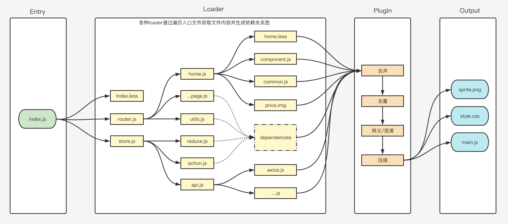

平安蜀黍的前端教程 > 第一单元 开发环境与工具封装 > 代码构建工具 Webpack
注意：在学习 webpack 之前，我们需要了解什么是模块化，对这块不够了解的，可以参考什么是模块化
了解了模块化规范后，我们来学习如何通过构建工具来将各个模块进行代码合并与项目构建。
前端工程化中很重要的一个步骤就是对项目的构建合并。Webpack 是当下最热门的前端资源模块化管理和打包工具。它可以将许多松散的模块按照依赖和规则打包成符合生产环境部署的前端资源。还可以将按需加载的模块进行代码分隔，等到实际需要的时候再异步加载。通过 loader 的转换，任何形式的资源都可以视作模块，比如 CommonJs 模块、AMD 模块、ES6 模块、CSS、图片、JSON、LESS 等。相对于 gulp、grunt 等，它的工作重心更偏重于模块打包处理。
一、webpack 的特点
可以解析 JSX 语法
可以解析 ES6 语法新特性
支持 LESS、SCSS 预处理器
编译完成自动打开浏览器
单独分离 CSS 样式文件
支持文件 MD5 戳，解决文件缓存问题
支持图片、图标字体等资源的编译
支持浏览器源码调试
实现组件级热更新
实现代码的热替换，浏览器实时刷新查看效果
区分开发环境和生产环境
分离业务功能代码和公共依赖代码
Webpack 的工作方式是：把你的项目当做一个整体，通过一个或多个给定的主文件（如：index.js），Webpack 将从这个文件开始找到你的项目的所有依赖文件，使用 loaders 处理它们的关系并根据关系生成依赖图，最后通过各种 plugin 打包为一个浏览器可识别的 JavaScript 文件并输出到 output 文件夹中。

二、webpack 的四大核心概念
1. entry 入口
entry 属性主要用于指示 webpack 应该使用哪个文件来作为构建其内部依赖图(dependency graph) 的开始。进入入口起点后，webpack 会找出有哪些模块和库是入口起点（直接和间接）依赖的。
webpack 默认的入口文件为./src/index.js。不过我们可以在 config 文件中进行指定，比如：
module.exports = {
entry: './bin/main.js',
};
webpack 同时也支持多个入口文件
module.exports = {
entry: {
app: './src/app.js',
adminApp: './src/adminApp.js',
},
};
2. output 出口
output 属性告诉 webpack 在哪里输出它所创建的 bundle，以及如何命名这些文件。主要输出文件的默认值是 ./dist/main.js，其他生成文件默认放置在 ./dist 文件夹中。同样的，我们可以在 config 中自定义一个输出文件夹：
// path是nodejs核心模块提供的一个用于处理文件路径的小工具，不需要安装，直接require
const path = require('path');
module.exports = {
entry: './bin/main.js',
output: {
path: path.resolve(__dirname, 'build'),
},
};
// 题外的部分知识
// 1. require来自于commondjs规范，在webpack中不可以使用es6规范中的import。因为nodejs使用的是commondJS规范，如果需要使用es6规范就必须使用babel来进行编译
// 2. ，常见方法有resolve，用于将相对路径解析成绝对路径；relative用于将绝对路径解析成相对路径；具体可以在课后关注https://www.runoob.com/nodejs/nodejs-path-module.html
3. loader
webpack 只能理解 JavaScript 和 JSON 文件，这是 webpack 开箱可用的自带能力。对于其它文件 webpack 就无法读取了，所以我们需要使用 loader 来让 webpack 能够去处理其他类型的文件，并将它们转换为有效模块，以供应用程序使用，以及被添加到依赖图中。
loader 有两个常用属性：test 和 use，我们通过 test 属性来告诉 webpack 需要匹配的文件后缀是什么，然后再通过 use 属性来告诉 webpack 使用什么 loader 来加载文件，比如：
module.exports = {
module: {
rules: [
{ test: /\.css$/, use: 'css-loader' },
{ test: /\.ts$/, use: 'ts-loader' },
],
},
};
use 属性也可以是一个依赖的集合，比如这样：
module.exports = {
module: {
rules: [
{
test: /\.css$/,
// 注意，这里的解析规则，与css一样，是从右到左解析的，先使用postcss-loader编译，然后使用css-loader编译，最后使用style-loader编译；最终将编译后的结果返回给webpack
use: ['style-loader', 'css-loader', 'postcss-loader'],
},
],
},
};
4. pluging
当我们使用 loader 读取完成文件以后，接来来还要对文件做一些操作比如合并，比如转义和压缩。这个时候就需要用到插件了。插件是 webpack 的支柱功能，它的目的在于解决 loader 无法实现的其它问题。
webpack 插件是一个具有 apply 方法的 JavaScript 对象。apply 方法会被 webpack compiler 调用，并且在整个的编译生命周期中都可以访问这个 compiler 对象。
// 用来生成html文件的依赖
// https://webpack.docschina.org/plugins/html-webpack-plugin/
const HtmlWebpackPlugin = require('html-webpack-plugin');
// 引入webpack中的内置文件
const webpack = require('webpack');
//
const path = require('path');
module.exports = {
// 指定入口
entry: './src/index.js',
// 出口配置
output: {
// 输出文件的名称
filename: 'index.bundle.js',
// 文件输出的位置
path: path.resolve(__dirname, 'build'),
},
// 所有的loader需要放置在module属性中
module: {
rules: [
{
// 匹配所有的后缀为js和jsx的文件
test: /\.(js|jsx)$/,
// 使用babel-loader来加载这个文件
use: 'babel-loader',
},
],
},
plugins: [
// webpack构建进度展示
new webpack.ProgressPlugin(),
// 生成编译好的html文件，我们打包成功后的js文件都需要通过这个文件来导入
new HtmlWebpackPlugin({ template: './src/index.html' }),
],
};
三、实战：使用 webpack 构建一个项目
了解完了 webpack 和它的四大核心概念后，我们来使用 webpack 构建一个项目：
第一步，新建项目
mkdir react-test // 创建项目
cd react-test // 进入目录
npm init -y // 初始化项目
第二步，配置包管理文件 package.json
package.json 文件是项目的清单。 它可以做很多完全互不相关的事情。 例如，它是用于工具的配置中心。 它也是 npm 和 yarn 存储所有已安装软件包的名称和版本的地方。
{
"name": "react_temp", // 项目名称，必须有
"version": "0.1.0", // 项目版本号，每次发布，必须递增相对应的版本号
// 版本号规则：注意，这是npm约定的规则，所有项目版本号必须遵循这个规则
// 第一位 大版本，有重大更新或不再向下兼容时，必须修改大版本号
// 第二位 小版本，项目有新增内容，但不会影响早期版本，用户更新后不影响原项目的运行
// 第三位 补丁版本，项目没有内容新增，只是解决了一些问题
"private": true, // 如果设置为 true，则可以防止应用程序/软件包被意外地发布到 npm
"main": "/main/index.js", // 项目的入口
"proxy": "http://shop.fenotes.com", // 服务器代理配置，为了避免跨域问题，我们可以在这里添加proxy属性，将其指向目标服务器
"scripts": { // 用于运行的 node 脚本
"start": "react-app-rewired start",
"build": "react-app-rewired build",
},
// 非执行依赖都不要往这里写，也就是说，在使用npm 或 yarn命令安装时，需要带上 -D
"dependencies": {}, // 生产依赖，安装到这里的依赖，会在执行 npm build 时将相关代码合并到包代码中
// 执行依赖不能往这里写，否则会造成项目运行时报错
"devDependencies": {}, // 开发依赖，安装到这里的依赖，在执行 npm build 时相关代码将不会合并到包代码中
"engines": {}, // 设置项目在哪个版本的 Node.js 上运行
"browserslist": {} // 支持哪些浏览器
}
第三步，创建容器文件
在项目根目录创建 public 文件夹，然后在 public 文件夹下创建 index.html 文件，这个文件用来提供给 webpack 编译成我们未来的项目入口文件。
<!DOCTYPE html>
<html lang="en">
<head>
<meta charset="UTF-8" />
<meta name="viewport" content="width=device-width, initial-scale=1.0" />
<title>webpack练习</title>
</head>
<body>
<div id="root"></div>
</body>
</html>
第四步，创建项目主文件
在项目根目录创建 src 文件夹，然后在 src 文件夹下创建 index.jsx 文件，这个文件是 webpack 的入口文件，文件中 import 进来的文件都会被加入依赖图，然后这些文件中 import 进来的文件也会被加入依赖图
import React from 'react';
import ReactDOM from 'react-dom';
// 这里这个root对应的是html文件中的容器div的id
ReactDOM.render(<div>hello webpack !!!</div>, document.getElementById('root'));
第五步，创建 webpack 主配置文件
在项目的根目录，创建 webpack.config.js 文件
const HtmlWebPackPlugin = require('html-webpack-plugin');
module.exports = {
// 入口
entry: './src/index.js',
// loader
module: {
// 所有的loader都需要写在这里面
rules: [
{
test: /\.jsx?$/, // jsx/js文件的正则
exclude: /node_modules/, // 排除 node_modules 文件夹
use: {
// loader 是 babel
loader: 'babel-loader',
options: {
// babel 转义的配置选项
babelrc: false,
presets: [
// 添加 preset-react
require.resolve('@babel/preset-react'),
[require.resolve('@babel/preset-env'), { modules: false }],
],
cacheDirectory: true,
},
},
},
],
},
plugins: [
// 根据public目录下的index.html来生成项目的首页
new HtmlWebPackPlugin({
template: 'public/index.html',
filename: 'index.html',
inject: true,
}),
],
};
第六步，安装依赖
我们刚刚创建的三个文件，里面引用了大量的依赖，比如 react，比如 webpack 等等，所以，需要在项目中安装它们才能正常使用。安装的时候我们需要区分哪些是生产环境使用的，哪些是开发环境使用的。
生产环境用的，表示是项目本身运行时的依赖，比如 react 以及相关的依赖。开发环境使用，表示是项目打包时的依赖，比如 webpack 等相关依赖。生产环境我们在 install 时使用-S 后缀，开发环境我们使用-D 后缀
// webpack主依赖，安装到开发环境
npm i -D webpack webpack-cli
// react项目主依赖，安装到生产环境
npm i -S react react-dom
// webpack打包等依赖，安装到开发环境
// babel-loader 核心插件，所有的代码需要使用它来处理一遍然后再分配给其它的loader
// @babel/core 核心插件，用于将代码转换成语法树结构的插件，所有代码需要调用babel语言转换插件时都需要这个包
npm i -D babel-loader @babel/core
// @babel/preset-env 用于解析环境的预设，它的功能是根据我们的env配置来按需加载插件，所谓env配置就是环境配置
// @babel/preset-react 用于解析JSX语法的预设
npm i -D @babel/preset-env @babel/preset-react
// html-webpack-plugin 可以在我们public中的index.html文件中写入打包后的js文件并输出到output目录下
npm i -D html-webpack-plugin
// 也可以使用yarn来安装，这里为了省事，我一次将所有的依赖安装进去
yarn add -D webpack webpack-cli babel-loader @babel/core @babel/preset-env @babel/preset-react html-webpack-plugin
//
yarn add react react-dom
第七步，配置本地开发环境
现在我们的项目已经可以在打包后运行起来了，但这样开发起来会很不方便，我们每改动一部分内容就需要执行打包命令，然后在浏览器中检查是否显示或功能正确。怎么解决这个问题呢？ webpack 提供了一个开发服务器，我们只需要配置好就行了。
先安装 webpack 开发服务器
yarn add -D webpack-dev-server
// 或者
npm i -D webpack-dev-server
在 webpack.config.js 中添加如下代码：
module.exports = {
...
// 配置开发服务器
devServer: {
port: 3000, // 指定端口即可
},
}
再在 package.json 中添加启动本地开发服务器的命令：
"start": "webpack-dev-server --mode development --open",
好了，现在执行我们熟悉的 npm start 命令，熟悉的页面将在你面前打开
很复杂是不是？比起 npx create-react-app 麻烦太多太多了，但是在企业里有很多独特的需求必须要使用 webpack 来配置项目，比如图片压缩，比如按需加载。所以，webpack 的相关配置是我们必须要学会且熟记的，这也是我们将来获取高薪的一个必备技能点！
更多的配置
样式文件的加载：cssload & lessload & styleload
安装用于读取编译 less 文件的 loader
npm i -D style-loader css-loader less-loader less
配置 loader
// 前面说过，loader的执行是倒序的，所以这里你们应该要能看懂
{
test: /\.css$/,
use: [
{
loader: 'style-loader', // 在页面中创建style标签
},
{
loader: 'css-loader', // css文件编译
},
],
},
{
test: /\.less$/,
use: [
{
loader: 'style-loader', // 在页面中创建style标签
},
{
loader: 'css-loader', // css文件编译
},
{
loader: 'less-loader', // 将less读取完成后编译成css
},
],
},
文件加载与图片加载：file-loader & url-loader
file-loader 与 url-loader 一般用来处理图片
npm i -D file-loader url-loader
// 配置
{
test: /\.(png|jpg|gif|jpeg)$/i,
type:'asset',
parser: {
dataUrlCondition: {
maxSize: 5120
}
}
}
配置代码格式
在项目根目录下新建一个.prettierrc.json 文件，这个文件是配给 prettierrc 插件使用的, 主要是对于一些其它同事 coding 时未遵循规范, 代码可读性较差时, 可以顺手帮忙右键格式一下。内容如下：
{
"bracketSpacing": true, // 在对象中属性冒号的右侧添加空格
"printWidth": 100, // 超过最大值换行
"useTabs": false, // 缩进不使用tab, 使用空格
"tabWidth": 2, // 缩进字节数
"semi": true, // 句尾添加分号
"singleQuote": true, // 使用单引号代替双引号
"arrowParens": "avoid", // (x) => {} 箭头函数参数只有一个时是否要有小括号。avoid：省略括号
}
添加路由管理
// router/index.js
import React from 'react';
import { BrowserRouter, Route, Switch } from 'react-router-dom';
// 为什么要用index.jsx? index代表了索引页, 也是当前目录的默认首页。所以, 在这里我们不需要指定文件名就能直接将目录中的index导入, 可以减少文件名称的输入以减少因为文件名输入错误造成的一些问题
import Homepage from '@pages/Homepage';
function Router() {
return (
<BrowserRouter>
<Switch>
<Route exact path="/" component={Homepage} />
</Switch>
</BrowserRouter>
);
}
export default Router;